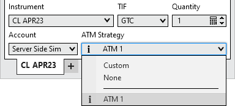
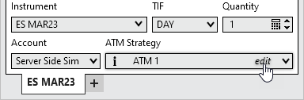
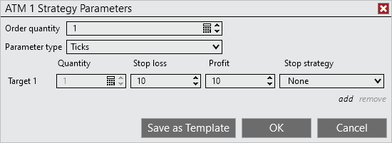
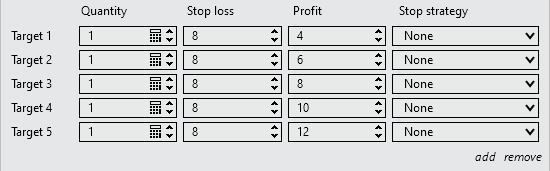

|
<< Click to Display Table of Contents >> Server Side ATM Strategy |


|
Server Side ATM Strategy
|
<< Click to Display Table of Contents >> Server Side ATM Strategy |
|
Majority of NinjaTrader's order entry interfaces house the same control for defining an ATM Strategy.
 Understanding the Server side ATM Strategy control list options
Understanding the Server side ATM Strategy control list options
The Strategy Control ListThe drop down list shown in the image below is very important to understand as it defines how your orders will be handled once submitted. There are two main categories of options that will be displayed in this drop-down list; None, Custom or strategy template names. Strategy templates are specific to your account and instrument.

NoneWhen this option is selected, any orders placed in the entry window will not be applied to an active ATM Strategy nor will it initiate a new ATM strategy.
Custom or ATM Strategy Template NamesWhen an ATM Strategy template name is selected, all of the parameters will update to reflect your pre-defined ATM Strategy, or when Custom is selected, you have the ability to define a new ATM Strategy on the fly. Once an order is submitted, the ATM Strategy parameters specified will be initiated when the order is partially or completely filled.
|
 Understanding Server Side Stop Loss and Profit Target parameters
Understanding Server Side Stop Loss and Profit Target parameters
ATM Strategy ParametersSelect Custom to define a new ATM Strategy or select the saved ATM Strategy template and select "edit" in the ATM Strategy combo box as seen below.

In the image below there are parameters that define the ATM Strategy. This strategy is a single quantity strategy that will automatically place its target at 10 ticks above the average entry price and stop loss 10 ticks below.

Selecting the "add" will allow you to configure additional Targets for your ATM Strategy. You can add as many targets as you desire. Selecting "remove" will reduce the number of configured Targets that are configured.

For further reference, please look at the Server Side Strategy Examples located within the "Server Side ATM Strategy" page. |